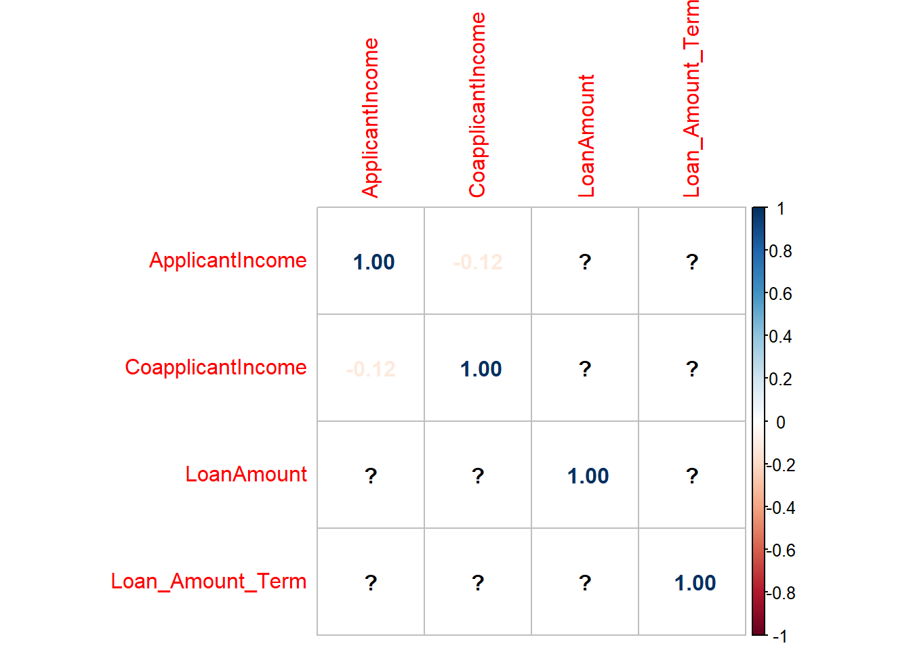
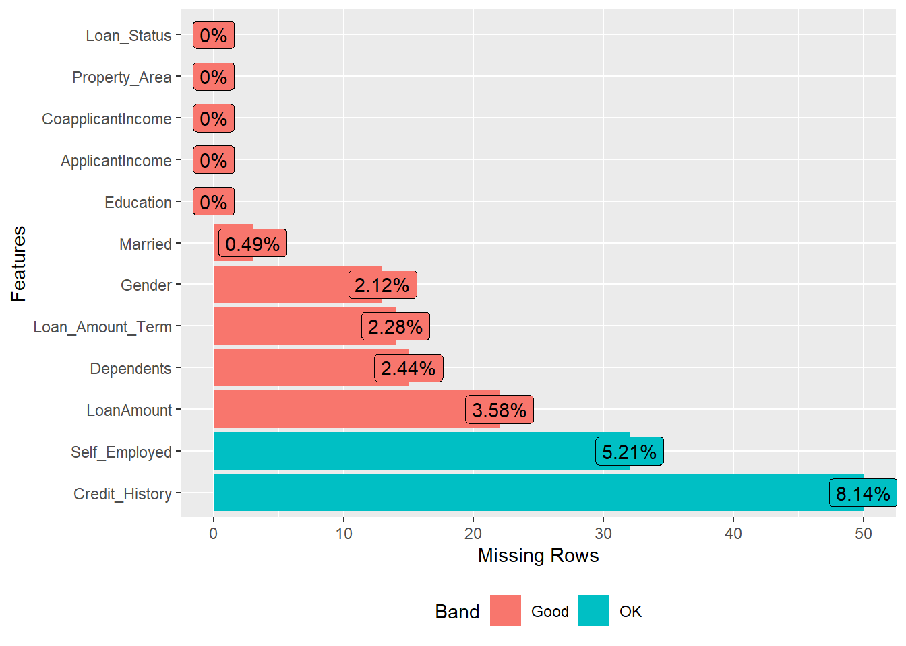

The main source of income of lenders stems from their credit line. Can it be improved?
Challenge
When applying for a loan, banks and lenders use an individual’s credit and other factors to determine the probability of repayment. Here, a predictive model is developed with study data that details how complex factors interact to determine the approval outcome for each individual. This method could be applied to any banks or lenders looking to lower the risk of default and loss in their portfolio to improve their institutional line of credit.
In this challenge we will develop models that allow us to predict whether a loan is approved given certain indicators. Models will include linear discriminant analysis, K-nearest neighbor, decision trees, and random forest algorithms and we will assess which performs best at predicting loan approval status through performance statistics.
Approach
For this challenge, we begin with data exploration to understand the relationships our target variable ‘Loan_Status’ will have with our indicator variables and the variables’ relationships to each other. This allows us to determine the steps necessary to set up for model development. Once we have an understanding of these variables we use that knowledge to prepare the data. We handle missing values, subset, train and split the data 75/25 so that we may better extract information when modeling. Then, we build the models and predict with the testing dataset.
We focus on prediction accuracy when assessing the models but consider a host of performance statistics and real-world applications to determine which model is best.
We will use ‘r’ for data modeling. All packages used for data exploration, visualization, preparation and modeling are listed in Code Appendix.
Data Exploration
Data Characteristics
There are 614 observations of 12 variables. Each observation is an applicant’s application for a loan with its corresponding variables of interest. Below is the description of the variables of interest in the data set.
VARIABLE NAME
DESCRIPTION
Loan_ID
Unique Loan ID
Gender
Male/ Female
Married
Applicant married (Y/N)
Dependents
Number of dependents
Education
Applicant Education (Graduate/ Undergraduate)
Self_Employed
Self employed (Y/N)
ApplicantIncome
Applicant income
CoapplicantIncome
Coapplicant income
LoanAmount
Loan amount in thousands
Loan_Amount_Term
Term of loan in months
Credit_History
credit history meets guidelines
Property_Area
Urban/ Semi Urban/ Rural
Loan_Status
Loan approved (Y/N)
There are four numeric variables represented by loan amount, loan amount term, applicant and co-applicant income. Several of these variables appear to be factors with specific levels but are not coded as such. For example, Gender, Married, Dependents, Education, Self_Employed, Property_Area, Credit_History, and Loan_Status are character strings. We will need to fix this if we are to make use of them.
Code
# read data, change blank to NA and and remove loan_idloan_data <-read.csv('https://raw.githubusercontent.com/amit-kapoor/Data622Group2/main/Loan_approval.csv') %>%na_if("") %>% dplyr::select(-1)# categorical columns as factorsloan_data <- loan_data %>%mutate(Gender=as.factor(Gender),Married=as.factor(Married),Dependents=as.factor(Dependents),Education=as.factor(Education),Self_Employed=as.factor(Self_Employed),Property_Area=as.factor(Property_Area),Credit_History=as.factor(Credit_History),Loan_Status=as.factor(Loan_Status))
Data summary
Below is a summary of the loan approval dataset. For this process we have already adjusted the data types to their proper forms. This summarizing function quantifies each variable in a manner consistent with their types. We notice the levels of each factor in the ‘Stats/Values’ column, the frequency of valid (non-missing) observations per level of our factors, and the quantity and percent missing alongside them. We review these statistics to identify any issues with each variable.
There are 7 columns that have missing values. The proportion of values for several columns shows significant differences and skew. For example, 97.9% of this dataset contains males applicants based on observations of the Gender variable, 99.5% of applicants are married people given the Married variable, and over 90% of our observations have longer Credit_History. Due to the disproportionate levels within the variables we should expect the data is not representative of a larger population unless that population happens to have similar proportions.
Our numeric incomes variables show significant signs of skew through the differences in their mean and medians as well as their ranges. The lowest applicant income was 150, while the highest was 81000. A similar problem exists with our co-applicant income data having had individuals with 0 income on the lowest end of the range and 41667 on the highest.
However, all of the observations contained an applicant and co-applicant income. Since some applicants may not have used a co-applicant on their applications, part of this skew could be caused by the data collection process. Additionally, we are only missing 3.6% of the observations of loan amount and 2.3% for loan terms.
There are regular intervals and commonality in the loan term amounts which indicates we may have been able to factorize their data types. We chose instead to leave it as a discrete numeric value since it represents the term length which could be any number of days or months. We note that 85.3% percent of these applicants applied for a loan term of 360 but we are unsure if that is due to the lending institutions standard practice or if applicants requested this specific term.
For exploratory purposes, we visualize the proportions to see just how skewed and disproportionate this dataset is. We include missing values to demonstrate their influence on the dataset as well. The chart below shows the distribution of all categorical variables, which includes the factors mentioned previously.
From this chart, it is very clear we have a dataset with mostly married male graduates with no dependents, a long credit history, and who are not self-employed. There is a relatively even mix of urban, suburban, and rural applicants and a small number of missing values. Applicants tend to be accepted more often than not and there are no missing observations for our target variable ‘Loan_Status’ nor the applicant’s property area or education. These are all of our categorical variables.
We also generate histograms with the count of each observation to assess our numeric variable distributions. This will let us know more about the skewness, average values, and where potential outliers may be found for our numeric variables. The graph below shows their distributions.
`stat_bin()` using `bins = 30`. Pick better value with `binwidth`.
The applicant income and co-applicant income variables are highly right skewed with a smaller number of individual applicants stretching the distribution towards higher incomes. For analysis purposes, we must keep in mind that only a handful of applicants had higher incomes while the bulk of applicants were concentrated at the lower end of the income distribution. The loan amount term has one spike at 360. Meanwhile, the loan amount is the closest to normal. These results are consistent with our summary table.
Next we will review the impact of the categorical variables’ proportions on loan approval in more detail by isolating the factor levels individually. Here again, we visualize the proportions as a bar chart without missing values and expand the size of the chart to see the nuances of each. These are placed alongside each variable’s frequency table by level to visualize their proportions. The results are as follows:
ggplot(loan_ed, aes(x=Education, y=Freq, fill=Education)) +geom_bar(stat='identity') +labs(title ='Approved Loans by Education', y ="Percentage", x ="Education")
ggplot(loan_mar, aes(x=Married, y=Freq, fill=Married)) +geom_bar(stat='identity') +labs(title ='Approved Loans by Married', y ="Percentage", x ="Married")
ggplot(loan_dep, aes(x=Dependents, y=Freq, fill=Dependents)) +geom_bar(stat='identity') +labs(title ='Approved Loans by Dependents', y ="Percentage", x ="Dependents")
These bar charts confirm our thoughts about the dataset’s disproportionalities. Missing values have little effect on the overall proportions and so they can be removed. It remains male dominated with applicants who are married, have no dependents, are highly educated, and have a long credit history.
Correlations
To determine how well each variable is correlated with our target variable and with one another, we construct a correlation plot. This plot contains the values of all correlation between variables represented by colors and numbers. The row we review the most is our target variable, ‘Loan_Status.’
Code
G =cor(loan_data[6:(length(loan_data)-3)])corrplot(G, method ='number') # colorful number

The numeric features do not seem to be strongly correlated with another so that is a factor that does not have to be dealt with.
Code
G =cor(loan_data[6:(length(loan_data)-3)])corrplot(G, method ='number') # colorful number
Given that our numeric features have correlation values near 0, they do not seem to be strongly correlated with our target. They also do not seem to have any correlation with one another so this is a factor that does not have to be dealt with.
Data Preparation
Handling missing values
Code
# plot missing valuesplot_missing(loan_data)

We can see above credit_history contributes to 8% of missing data along with self_employed that accounts for more than 5% of missing data. All records having missing categorical predictors will be removed. Next we will impute numeric values using MICE (Multivariate Imputation by Chained Equations).
Code
# Filter out the data which has missing categorical predictorsloan_data <- loan_data %>%filter(!is.na(Credit_History) &!is.na(Self_Employed) &!is.na(Dependents) &!is.na(Gender) &!is.na(Married))
Code
# impute numeric predictors using miceloan_data <-complete(mice(data=loan_data, method="pmm", print=FALSE))
Code
dim(loan_data)
[1] 511 12
Finally our clean dataset contains 511 rows and 12 columns.
Preprocess using transformation
We have seen above that numeric features are right skewed so in this step we will use caret preprocess method using box cox, center and scale transformation.
Code
# library(e1071) - where this was usedset.seed(622)loan_data <- loan_data %>% dplyr::select(c("ApplicantIncome", "CoapplicantIncome", "LoanAmount", "Loan_Amount_Term")) %>%preProcess(method =c("BoxCox","center","scale")) %>%predict(loan_data)
Training and Test Partition
In this step for data preparation we will partition the training dataset in training and validation sets using createDataPartition method from caret package. We will reserve 75% for training and rest 25% for validation purpose.
Confusion Matrix and Statistics
Reference
Prediction N Y
N 19 4
Y 22 82
Accuracy : 0.7953
95% CI : (0.7146, 0.8617)
No Information Rate : 0.6772
P-Value [Acc > NIR] : 0.0022025
Kappa : 0.471
Mcnemar's Test P-Value : 0.0008561
Sensitivity : 0.4634
Specificity : 0.9535
Pos Pred Value : 0.8261
Neg Pred Value : 0.7885
Prevalence : 0.3228
Detection Rate : 0.1496
Detection Prevalence : 0.1811
Balanced Accuracy : 0.7085
'Positive' Class : N
Decision Tree model accuracy comes out as ~80%
Random Forests
Code
set.seed(622)# Random Forest modelrf.loans <-randomForest(Loan_Status~., data = training)rf.loans
Call:
randomForest(formula = Loan_Status ~ ., data = training)
Type of random forest: classification
Number of trees: 500
No. of variables tried at each split: 3
OOB estimate of error rate: 20.57%
Confusion matrix:
N Y class.error
N 59 64 0.52032520
Y 15 246 0.05747126
Code
# prediction from random forest modelrf.predict <-predict(rf.loans, testing,type='class')mean(rf.predict == testing$Loan_Status) # accuracy
[1] 0.8110236
Code
confusionMatrix(rf.predict, testing$Loan_Status)
Confusion Matrix and Statistics
Reference
Prediction N Y
N 22 5
Y 19 81
Accuracy : 0.811
95% CI : (0.732, 0.875)
No Information Rate : 0.6772
P-Value [Acc > NIR] : 0.0005479
Kappa : 0.5254
Mcnemar's Test P-Value : 0.0079635
Sensitivity : 0.5366
Specificity : 0.9419
Pos Pred Value : 0.8148
Neg Pred Value : 0.8100
Prevalence : 0.3228
Detection Rate : 0.1732
Detection Prevalence : 0.2126
Balanced Accuracy : 0.7392
'Positive' Class : N
Random Forest model accuracy comes out as ~80%
Model Performance
All 4 of the models we built above have an accuracy rate of around 80% with the LDA model getting the light edge in accuracy (81.1% to 79.5% for the other 3).
Next we will look at some more detailed accuracy metrics produced from the predict function.
In this particular case, since the accuracy results are so similar it is wise to examine which models are most often leading to type 1 or type 2 errors. Assuming a null hypothesis is not giving a loan a type 1 error is giving someone a loan when they should not have gotten one and a type 2 error is not giving someone a loan when they should have gotten one. This correlates to the sensitivity and specificity respectively. The balanced accuracy metric takes the mean of sensitivity and specificity in order to diagnose if a model appears to be accurate but is really only predicting the positive or negative case correctly. In this case the random forest model has a slight edge over the LDA in balanced accuracy (0.7212 to 0.7201).
Although the LDA has the smallest p-value it is still <0.0025 for all models so they can all be used so this does not help us decide which model to choose. The same can be said for the Mcnemar’s p-value.
The LDA also has the best Kappa score of 0.5046. The Kappa score can be a much more accurate indicator of accuracy then the standard accuracy rate. The kappa score takes into account the expected accuracy of a model given the instances of each class. This helps a lot with unbalanced class numbers in the dataset. It is encouraging to see the LDA Kappa is also the highest which corresponds with it having the highest accuracy. Although the accuracy score is high a Kappa score around 0.5046 only indicates a moderately good model.
Given the LDa has the highest accuracy, kappa, and nearly the highest balanced accuracy, the LDA is the model that we would use going forward.
Conclusion
After reviewing the results of 4 different models (LDA, KNN, Decision Tree, and Random Forest), we found that LDA is the most accurate by numerous metrics and should be considered the best model for this data. However, the metrics for these 4 models was very close and it did not leave us with no choice but to pick the LDA. If presenting this to stakeholders we would recommend the LDA model with the caveat they further testing and verification may be needed to ensure the LDA is the most accurate model of other iterations of the split of training and testing data.
Source Code
---title: "Loan Approval"subtitle: "A Credit Risk Assessment"author: "Zach Palmore"date: "2022-08-28"categories: [predictive, modeling, data science]image: "transparent_moneytree.png"format: html: code-fold: true code-tools: true code-link: true highlight-style: pygments html-math-method: katex df-print: paged cache: true theme: light: flatly dark: darkly---------------------------------------------------------------------------```{r setup, include=FALSE}knitr::opts_chunk$set(echo=FALSE, error=FALSE, warning=FALSE, message=FALSE, fig.align="center", fig.width =10)```The main source of income of lenders stems from their credit line. Can it be improved?# ChallengeWhen applying for a loan, banks and lenders use an individual's credit and other factors to determine the probability of repayment. Here, a predictive model is developed with study data that details how complex factors interact to determine the approval outcome for each individual. This method could be applied to any banks or lenders looking to lower the risk of default and loss in their portfolio to improve their institutional line of credit. In this challenge we will develop models that allow us to predict whether a loan is approved given certain indicators. Models will include linear discriminant analysis, K-nearest neighbor, decision trees, and random forest algorithms and we will assess which performs best at predicting loan approval status through performance statistics. # ApproachFor this challenge, we begin with data exploration to understand the relationships our target variable ‘Loan_Status’ will have with our indicator variables and the variables’ relationships to each other. This allows us to determine the steps necessary to set up for model development. Once we have an understanding of these variables we use that knowledge to prepare the data. We handle missing values, subset, train and split the data 75/25 so that we may better extract information when modeling. Then, we build the models and predict with the testing dataset. We focus on prediction accuracy when assessing the models but consider a host of performance statistics and real-world applications to determine which model is best. We will use ‘r’ for data modeling. All packages used for data exploration, visualization, preparation and modeling are listed in Code Appendix. ```{r libraries, include=FALSE, warning=FALSE, message=FALSE}# Librarieslibrary(summarytools)library(tidyverse)library(DataExplorer)library(reshape2)library(mice)library(caret)library(MASS)library(e1071)library(caret)library(tree)library(randomForest)library(corrplot)set.seed(622)```# Data Exploration## Data CharacteristicsThere are 614 observations of 12 variables. Each observation is an applicant’s application for a loan with its corresponding variables of interest. Below is the description of the variables of interest in the data set. |VARIABLE NAME|DESCRIPTION||--|----||Loan_ID|Unique Loan ID||Gender|Male/ Female||Married|Applicant married (Y/N)||Dependents|Number of dependents||Education|Applicant Education (Graduate/ Undergraduate)||Self_Employed|Self employed (Y/N)||ApplicantIncome|Applicant income||CoapplicantIncome|Coapplicant income||LoanAmount|Loan amount in thousands||Loan_Amount_Term|Term of loan in months||Credit_History|credit history meets guidelines||Property_Area|Urban/ Semi Urban/ Rural||Loan_Status|Loan approved (Y/N)|There are four numeric variables represented by loan amount, loan amount term, applicant and co-applicant income. Several of these variables appear to be factors with specific levels but are not coded as such. For example, Gender, Married, Dependents, Education, Self_Employed, Property_Area, Credit_History, and Loan_Status are character strings. We will need to fix this if we are to make use of them. ```{r data}# read data, change blank to NA and and remove loan_idloan_data <-read.csv('https://raw.githubusercontent.com/amit-kapoor/Data622Group2/main/Loan_approval.csv') %>%na_if("") %>% dplyr::select(-1)# categorical columns as factorsloan_data <- loan_data %>%mutate(Gender=as.factor(Gender),Married=as.factor(Married),Dependents=as.factor(Dependents),Education=as.factor(Education),Self_Employed=as.factor(Self_Employed),Property_Area=as.factor(Property_Area),Credit_History=as.factor(Credit_History),Loan_Status=as.factor(Loan_Status))```## Data summaryBelow is a summary of the loan approval dataset. For this process we have already adjusted the data types to their proper forms. This summarizing function quantifies each variable in a manner consistent with their types. We notice the levels of each factor in the ‘Stats/Values’ column, the frequency of valid (non-missing) observations per level of our factors, and the quantity and percent missing alongside them. We review these statistics to identify any issues with each variable.```{r loan_data_summary}dfSummary(loan_data, style ='grid', graph.col =FALSE)```There are 7 columns that have missing values. The proportion of values for several columns shows significant differences and skew. For example, 97.9% of this dataset contains males applicants based on observations of the Gender variable, 99.5% of applicants are married people given the Married variable, and over 90% of our observations have longer Credit_History. Due to the disproportionate levels within the variables we should expect the data is not representative of a larger population unless that population happens to have similar proportions. Our numeric incomes variables show significant signs of skew through the differences in their mean and medians as well as their ranges. The lowest applicant income was 150, while the highest was 81000. A similar problem exists with our co-applicant income data having had individuals with 0 income on the lowest end of the range and 41667 on the highest. However, all of the observations contained an applicant and co-applicant income. Since some applicants may not have used a co-applicant on their applications, part of this skew could be caused by the data collection process. Additionally, we are only missing 3.6% of the observations of loan amount and 2.3% for loan terms. There are regular intervals and commonality in the loan term amounts which indicates we may have been able to factorize their data types. We chose instead to leave it as a discrete numeric value since it represents the term length which could be any number of days or months. We note that 85.3% percent of these applicants applied for a loan term of 360 but we are unsure if that is due to the lending institutions standard practice or if applicants requested this specific term. For exploratory purposes, we visualize the proportions to see just how skewed and disproportionate this dataset is. We include missing values to demonstrate their influence on the dataset as well. The chart below shows the distribution of all categorical variables, which includes the factors mentioned previously. ```{r, cat-bar, fig.length =20, fig.width=10}# select categorical columnscat_cols =c()j <-1for (i in1:ncol(loan_data)) {if (class((loan_data[,i])) =='factor') { cat_cols[j]=names(loan_data[i]) j <- j+1 }}loan_fact <- loan_data[cat_cols]# long formatloan_factm <-melt(loan_fact, measure.vars = cat_cols, variable.name ='metric', value.name ='value')# plot categorical columnsggplot(loan_factm, aes(x = value)) +geom_bar() +scale_fill_brewer(palette ="Set1") +facet_wrap( ~ metric, nrow = 5L, scales ='free') +coord_flip()```From this chart, it is very clear we have a dataset with mostly married male graduates with no dependents, a long credit history, and who are not self-employed. There is a relatively even mix of urban, suburban, and rural applicants and a small number of missing values. Applicants tend to be accepted more often than not and there are no missing observations for our target variable ‘Loan_Status’ nor the applicant's property area or education. These are all of our categorical variables. We also generate histograms with the count of each observation to assess our numeric variable distributions. This will let us know more about the skewness, average values, and where potential outliers may be found for our numeric variables. The graph below shows their distributions.```{r plot_num}plot_histogram(loan_data, geom_histogram_args =list("fill"="tomato4"))```The applicant income and co-applicant income variables are highly right skewed with a smaller number of individual applicants stretching the distribution towards higher incomes. For analysis purposes, we must keep in mind that only a handful of applicants had higher incomes while the bulk of applicants were concentrated at the lower end of the income distribution. The loan amount term has one spike at 360. Meanwhile, the loan amount is the closest to normal. These results are consistent with our summary table. Next we will review the impact of the categorical variables’ proportions on loan approval in more detail by isolating the factor levels individually. Here again, we visualize the proportions as a bar chart without missing values and expand the size of the chart to see the nuances of each. These are placed alongside each variable's frequency table by level to visualize their proportions. The results are as follows:```{r}loan_ch <-with(loan_data, table(Credit_History, Loan_Status)) %>%prop.table(margin =1) %>%as.data.frame() %>%filter(Loan_Status =='Y')loan_ch``````{r}ggplot(loan_ch, aes(x=Credit_History, y=Freq, fill=Credit_History)) +geom_bar(stat='identity') +labs(title ='Approved Loans by Credit History', y ="Percentage", x ="Credit History")``````{r}loan_gen <-with(loan_data, table(Gender, Loan_Status)) %>%prop.table(margin =1) %>%as.data.frame() %>%filter(Loan_Status =='Y')loan_gen``````{r}ggplot(loan_gen, aes(x=Gender, y=Freq, fill=Gender)) +geom_bar(stat='identity') +labs(title ='Approved Loans by Gender', y ="Percentage", x ="Gender")``````{r}loan_ed <-with(loan_data, table(Education, Loan_Status)) %>%prop.table(margin =1) %>%as.data.frame() %>%filter(Loan_Status =='Y')loan_ed``````{r}ggplot(loan_ed, aes(x=Education, y=Freq, fill=Education)) +geom_bar(stat='identity') +labs(title ='Approved Loans by Education', y ="Percentage", x ="Education")``````{r}loan_mar <-with(loan_data, table(Married, Loan_Status)) %>%prop.table(margin =1) %>%as.data.frame() %>%filter(Loan_Status =='Y')loan_mar``````{r}ggplot(loan_mar, aes(x=Married, y=Freq, fill=Married)) +geom_bar(stat='identity') +labs(title ='Approved Loans by Married', y ="Percentage", x ="Married")``````{r}loan_dep <-with(loan_data, table(Dependents, Loan_Status)) %>%prop.table(margin =1) %>%as.data.frame() %>%filter(Loan_Status =='Y')loan_dep``````{r}ggplot(loan_dep, aes(x=Dependents, y=Freq, fill=Dependents)) +geom_bar(stat='identity') +labs(title ='Approved Loans by Dependents', y ="Percentage", x ="Dependents")```These bar charts confirm our thoughts about the dataset’s disproportionalities. Missing values have little effect on the overall proportions and so they can be removed. It remains male dominated with applicants who are married, have no dependents, are highly educated, and have a long credit history.## CorrelationsTo determine how well each variable is correlated with our target variable and with one another, we construct a correlation plot. This plot contains the values of all correlation between variables represented by colors and numbers. The row we review the most is our target variable, ‘Loan_Status.’```{r}G =cor(loan_data[6:(length(loan_data)-3)])corrplot(G, method ='number') # colorful number```The numeric features do not seem to be strongly correlated with another so that is a factor that does not have to be dealt with.```{r}G =cor(loan_data[6:(length(loan_data)-3)])corrplot(G, method ='number') # colorful number```Given that our numeric features have correlation values near 0, they do not seem to be strongly correlated with our target. They also do not seem to have any correlation with one another so this is a factor that does not have to be dealt with. # Data Preparation## Handling missing values```{r}# plot missing valuesplot_missing(loan_data)```We can see above credit_history contributes to 8% of missing data along with self_employed that accounts for more than 5% of missing data. All records having missing categorical predictors will be removed. Next we will impute numeric values using MICE (Multivariate Imputation by Chained Equations).```{r cat-missing}# Filter out the data which has missing categorical predictorsloan_data <- loan_data %>%filter(!is.na(Credit_History) &!is.na(Self_Employed) &!is.na(Dependents) &!is.na(Gender) &!is.na(Married))``````{r num-missing}# impute numeric predictors using miceloan_data <-complete(mice(data=loan_data, method="pmm", print=FALSE))``````{r}dim(loan_data)```Finally our clean dataset contains 511 rows and 12 columns.## Preprocess using transformationWe have seen above that numeric features are right skewed so in this step we will use caret `preprocess` method using box cox, center and scale transformation.```{r transform-train}# library(e1071) - where this was usedset.seed(622)loan_data <- loan_data %>% dplyr::select(c("ApplicantIncome", "CoapplicantIncome", "LoanAmount", "Loan_Amount_Term")) %>%preProcess(method =c("BoxCox","center","scale")) %>%predict(loan_data)```## Training and Test PartitionIn this step for data preparation we will partition the training dataset in training and validation sets using `createDataPartition` method from `caret` package. We will reserve 75% for training and rest 25% for validation purpose.```{r partition}set.seed(622)partition <-createDataPartition(loan_data$Loan_Status, p=0.75, list =FALSE)training <- loan_data[partition,]testing <- loan_data[-partition,]# training/validation partition for independent variables#X.train <- ld.clean[partition, ] %>% dplyr::select(-Loan_Status)#X.test <- ld.clean[-partition, ] %>% dplyr::select(-Loan_Status)# training/validation partition for dependent variable Loan_Status#y.train <- ld.clean$Loan_Status[partition]#y.test <- ld.clean$Loan_Status[-partition]```# Build Models## Linear Discriminant Analysis (LDA)```{r lda}# LDA modellda_model <-lda(Loan_Status~., data = loan_data)lda_model``````{r}# prediction from lda modellda_predict <- lda_model %>%predict(testing)``````{r lda-accuracy}# accuracymean(lda_predict$class==testing$Loan_Status)confusionMatrix(lda_predict$class, testing$Loan_Status)```LDA model accuracy comes out as ~81%## K-nearest neighbor (KNN)```{r knn}# KNN modelset.seed(622)train.knn <- training[, names(training) !="Direction"]prep <-preProcess(x = train.knn, method =c("center", "scale"))prepcl <-trainControl(method="repeatedcv", repeats =5) knn_model <-train(Loan_Status ~ ., data = training, method ="knn", trControl = cl, preProcess =c("center","scale"), tuneLength =20)knn_model ``````{r}# prediction from knn modelplot(knn_model)knn_predict <-predict(knn_model,newdata = testing)mean(knn_predict == testing$Loan_Status) # accuracyconfusionMatrix(knn_predict, testing$Loan_Status)```KNN model accuracy comes out as ~80%## Decision Trees```{r Decision}# Decision Trees modelset.seed(622)tree.loans =tree(Loan_Status~., data=training)summary(tree.loans)plot(tree.loans)text(tree.loans, pretty =0)``````{r}# prediction from decision tree modeltree.predict<-predict(tree.loans, testing, type ='class')mean(tree.predict == testing$Loan_Status) # accuracyconfusionMatrix(tree.predict, testing$Loan_Status)```Decision Tree model accuracy comes out as ~80%## Random Forests```{r rf}set.seed(622)# Random Forest modelrf.loans <-randomForest(Loan_Status~., data = training)rf.loans``````{r}# prediction from random forest modelrf.predict <-predict(rf.loans, testing,type='class')mean(rf.predict == testing$Loan_Status) # accuracyconfusionMatrix(rf.predict, testing$Loan_Status)```Random Forest model accuracy comes out as ~80%# Model PerformanceAll 4 of the models we built above have an accuracy rate of around 80% with the LDA model getting the light edge in accuracy (81.1% to 79.5% for the other 3). Next we will look at some more detailed accuracy metrics produced from the predict function. In this particular case, since the accuracy results are so similar it is wise to examine which models are most often leading to type 1 or type 2 errors. Assuming a null hypothesis is not giving a loan a type 1 error is giving someone a loan when they should not have gotten one and a type 2 error is not giving someone a loan when they should have gotten one. This correlates to the sensitivity and specificity respectively. The balanced accuracy metric takes the mean of sensitivity and specificity in order to diagnose if a model appears to be accurate but is really only predicting the positive or negative case correctly. In this case the random forest model has a slight edge over the LDA in balanced accuracy (0.7212 to 0.7201).Although the LDA has the smallest p-value it is still <0.0025 for all models so they can all be used so this does not help us decide which model to choose. The same can be said for the Mcnemar's p-value.The LDA also has the best Kappa score of 0.5046. The Kappa score can be a much more accurate indicator of accuracy then the standard accuracy rate. The kappa score takes into account the expected accuracy of a model given the instances of each class. This helps a lot with unbalanced class numbers in the dataset. It is encouraging to see the LDA Kappa is also the highest which corresponds with it having the highest accuracy. Although the accuracy score is high a Kappa score around 0.5046 only indicates a moderately good model.Given the LDa has the highest accuracy, kappa, and nearly the highest balanced accuracy, the LDA is the model that we would use going forward.# ConclusionAfter reviewing the results of 4 different models (LDA, KNN, Decision Tree, and Random Forest), we found that LDA is the most accurate by numerous metrics and should be considered the best model for this data. However, the metrics for these 4 models was very close and it did not leave us with no choice but to pick the LDA. If presenting this to stakeholders we would recommend the LDA model with the caveat they further testing and verification may be needed to ensure the LDA is the most accurate model of other iterations of the split of training and testing data.